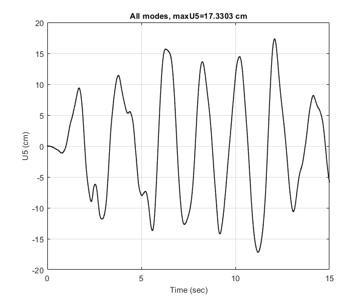
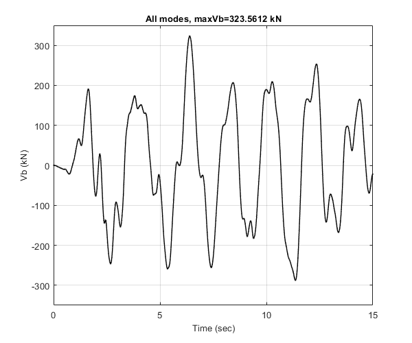

Verify the dynamic response history analysis of OpenSeismoMatlab
Calculate linear dynamic response of a MDOF shear building
Contents
Reference
Chopra, A. K. (2020). Dynamics of structures, Theory and Applications to Earthquake Engineering, 5th edition. Prenctice Hall.
Description
The example 13.2.6 (Example: Five-Story Shear Frame) of the above reference is solved in this example. Consider the five-story shear frame of Fig.12.8.1 of the above reference, subjected to the El Centro ground motion. The lumped masses are equal to 45 Mg at each floor, the lateral stiffness of each story is 54.82 kN/cm and the height of each story is 4 m. The damping ratio for all natural modes is 0.05.
Load earthquake data
Earthquake acceleration time history of the El Centro earthquake will be used (El Centro, 1940, El Centro Terminal Substation Building)
fid=fopen('elcentro.dat','r'); text=textscan(fid,'%f %f'); fclose(fid); t=text{1,1}; dt=t(2)-t(1); xgtt=text{1,2};
Setup parameters for DRHA function
Set the storey height of the structure in m.
h=4;
Set the number of degrees of freedom of the structure, which is equal to the number of its storeys.
nDOFs=5;
Set the lateral stiffness of each storey in N/m.
k=5.482e6;
Set the lumped mass at each floor in kg.
m=45e3;
Calculation of structural properties
Calculate the stiffness matrix of the structure in N/m.
K=k*ones(nDOFs,1);
Calculate the mass matrix of the structure.
M=m*ones(nDOFs,1);
Critical damping ratio
ksi=0.05;
Initial displacement
u0=zeros(nDOFs,1);
Initial velocity
ut0=zeros(nDOFs,1);
Algorithm to be used for the time integration
AlgID='U0-V0-Opt';
Minimum absolute value of the eigenvalues of the amplification matrix
rinf=1;
Calculate dynamic response
Apply DRHA
[U,V,A,f,Es,Ed] = DRHA(K,M,dt,xgtt,ksi,u0,ut0,AlgID,rinf);
Base shear time history
FBeig=sum(f,1);
5th storey shear time history (5th DOF)
Feig=f(1,:);
Roof displacement time history (5th DOF)
Ueig=U(1,:);
Base moment time history
MBeig=sum(f.*repmat((5*h:(-h):h)',1,size(f,2)),1);
Roof displacement time history
Plot the roof displacement time history. Convert displacements from m to cm. Verify with Figure 13.2.8 (left) of the above reference.
figure(); plot(t,100*Ueig,'LineWidth',1.,'Marker','.',... 'MarkerSize',1,'Color',[0 0 0],'markeredgecolor','k') grid on xlim([0,15]) ylim([-20,20]) xlabel('Time (sec)','FontSize',10); ylabel('U5 (cm)','FontSize',10); title(['All modes, maxU5=',num2str(max(abs(100*Ueig))),' cm'],... 'FontSize',10)
Fifth-story shear time history
Plot the fifth-story shear time history. Convert forces from N to kN. Verify with Figure 13.2.7 (right) of the above reference.
figure(); plot(t,Feig/1e3,'LineWidth',1.,'Marker','.',... 'MarkerSize',1,'Color',[0 0 0],'markeredgecolor','k') grid on xlim([0,15]) ylim([-175,175]) xlabel('Time (sec)','FontSize',10); ylabel('V5 (kN)','FontSize',10); title(['All modes, maxV5=',num2str(max(abs(Feig/1e3))),' kN'],... 'FontSize',10)
Base shear time history
Plot the base shear time history. Convert forces from N to kN. Verify with Figure 13.2.7 (left) of the above reference
figure(); plot(t,FBeig/1e3,'LineWidth',1.,'Marker','.',... 'MarkerSize',1,'Color',[0 0 0],'markeredgecolor','k') grid on xlim([0,15]) ylim([-350,350]) xlabel('Time (sec)','FontSize',10); ylabel('Vb (kN)','FontSize',10); title(['All modes, maxVb=',num2str(max(abs(FBeig/1e3))),' kN'],... 'FontSize',10)
Base moment time history
Plot the base moment time history. Convert moments from Nm to kNm. Verify with Figure 13.2.8 (right) of the above reference
figure(); plot(t,MBeig/1e3,'LineWidth',1.,'Marker','.',... 'MarkerSize',1,'Color',[0 0 0],'markeredgecolor','k') grid on xlim([0,15]) ylim([-4000,4000]) xlabel('Time (sec)','FontSize',10); ylabel('Mb (kNm)','FontSize',10); title(['All modes, maxMb=',num2str(max(abs(MBeig/1e3))),' kNm'],... 'FontSize',10)
Copyright
Copyright (c) 2018-2022 by George Papazafeiropoulos
- Major, Infrastructure Engineer, Hellenic Air Force
- Civil Engineer, M.Sc., Ph.D.
- Email: gpapazafeiropoulos@yahoo.gr